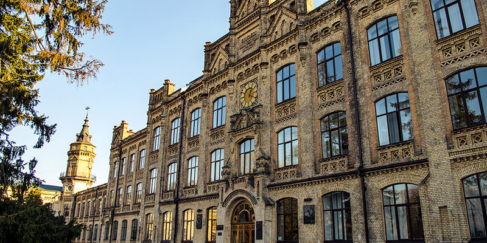

Національний технічний університе́т України «Київський політехнічний інститут імені Ігоря Сікорського» — заклад вищої освіти інженерного профілю, заснований в Києві у 1898 р., на сьогодні це найбільший університет України за кількістю студентів з широким спектром спеціальностей і спеціалізацій для підготовки фахівців з технічних і гуманітарних наук. З 2009 до 2014 року мав статус автономного дослідницького університету. За рейтингами ВНЗ займає перше місце або ж входить в трійку найкращих в Україні.
